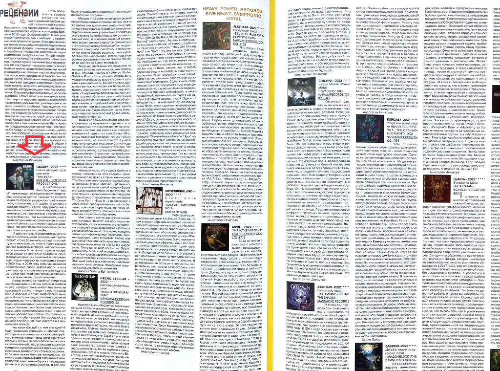

GALAXY – 2022 * * * *
Industrial / synth rock / new wave
“THE BEST”
WINTER SOLSTICE PRODUCTIONS
Я никогда не любил сборники и “best of”-компиляции, но когда ты вдруг встречаешь хорошую группу, творчество которой каким-то образом умудрилось пройти мимо тебя, и коллектив этот давно не активен и воздвиг памятник себе нерукотворный в анналах истории, вполне можно начать знакомиться с её творчеством и посредством такого сборника. Как вы понимаете, у нас с вами сегодня именно такой случай, и олдскульный релиз с архиэлементарным названием “The Best” появился у нас с вами сегодня в повестке дня не случайно.
Я действительно абсолютно ничего не знаю о деятельности электронной группы GalaxY, что из Волжского, но судя по их сайту и по мелькающим у меня перед глазами сейчас заметкам в прессе, коллектив имеет за плечами большую историю и котируется среди слушателей подобных синт-фантасмагорий как знаковый и заслуженный. Корни генеалогии коллектива уходят в 2004 год, в 2010 году команда заявила о приостановке своей деятельности, и хотя уже год спустя снова вернулась на сцену, в 2013 году всё-таки окончательно раскололась и прекратила существование.
А ведь именно за подобный сумрачный электро-декаданс я очень люблю и котирую N-616, которые тоже имеют практически культовый статус и ведут свою историю ещё с далёких и почти мифических ныне доглобалистских годов, а потому совсем не удивительно, что знакомство с GalaxY тоже стало для меня приятным сюрпризом и находкой. Конечно, они более андеграундны, сыры, agro-ориентированы и хаотичны, но это уже частности и детали. Как говорится, главное – чтобы человек был хороший, а в данном случае у нас ещё имеется и очень неплохая музыка.
Что такое GalaxY и с чем его едят? Я буду предельно упрощать и нарочно стирать грани и оттенки, но скажу в духе крайнего минимализма: перед нами всё тот же старый и добрый Depeche Mode, лишь слегка утяжелённый, нарастивший мрачные контрасты и углубившийся в мрачные и депрессивные декадентско-готические руины. Если вам нужно больше конкретики, то можно сравнивать GalaxY с ранними L’ame Immortelle или с кем-нибудь из патриархов раннего агротех-индастриала, и всё это будет справедливо, правильно и против реальности не погрешит.
Музыка этих ребят отличается рваной непричёсанностью и спонтанностью, но в то же время она достаточно динамична, ритмична и благозвучна. Подобный винегрет из звуков и вокальных упражнений адекватнее всего можно было бы описать как организованный хаос и основной вокалист коллектива всеми силами старается привнести в этот плотный шквал беснующейся, но достаточно слаженной синтетики-электроники как можно больше раздора, панка и раздолбайства (напоминая, кстати, при этом ранние вокальные попытки Томаса Райнера из всё тех же L’ame Immortelle!).

Мода на винтажные аудиокассеты не прошла мимо наших сегодняшних героев, и они, объединившись с лейблом Winter Solstice Productions, решили отдать дань уважения любимому формату своего детства и ранней юности. Вышло стильно, красиво и винтажно. И я сам как большой любитель аудиокассет, могу лишь подтвердить, что музыка при прослушивании с кассеты словно обретает дополнительную глубину и звучит на порядок теплее, объёмнее и живее, а подобный GalaxY электронный крафт при прослушивании с такого носителя как будто обретает пачку бонусов и параллельно включает дополнительный турбо-генератор.
GalaxY со своим релизом не стали исключением из озвученного правила, и их электронный ретро-минимализм на актуальной компиляции звучит как экспериментальный привет из аналоговых 90-х, когда подобный материал только-только начинал своё шествие по планете, а у нас в стране на катушках и кассетах были в моде записи Технологии и Биоконструктора. Что ж, сыграть сейчас, в эпоху засилья бездушных онлайн-mp-3-фонилок на такой ностальгии очень даже адекватное решение, а фанаты аналогового формата точно будут рады такому пополнению своих кассетных коллекций.
Немного жаль, что голоса Селены в треках, попавших на этот сборник практически нет, но даже и с таким минимумом “The Best” уверенно вызывает нужный эмоциональный отклик, красиво и размашисто прогуливаясь по славной истории GalaxY и отражая разные эпохи их творчества. От простеньких и даже наивных синт-поделок до серьёзных атмосферных эпиков вроде “To Drive For” и “Stop It”, а послевкусие в итоге после прослушивания остаётся богатое, приятное и оригинальное, чему немало способствует и стильное кассетное издание с красочным буклетом.
Мне сложно как-то адекватно оценивать материал “Best Of”, и я могу лишь констатировать, что воспринимаю его как памятник ушедшей эпохе и как живую классику в своей жанровой нише. Что можно говорить сейчас про первые записи Технологии, Биоконструктора, L’ame Immortelle, Hocico или Wumpskut? Всё это часть истории и живая, задокументированная на плёнке и в цифре эпоха. Точно так же дело обстоит и с GalaxY, которые при всей своей экспериментальности и бунтарской расхлябанности выглядят сейчас интересно, колоритно и характерно. Отличный релиз для любителей подобной музыки и таких релизов. Прекрасный подарок коллекционерам и ценителям.
Алексей “Astarte Eel” Иринеев